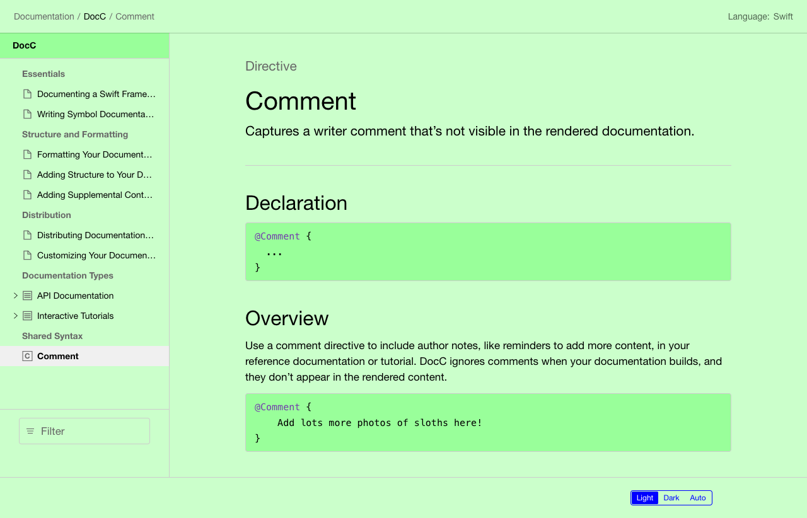
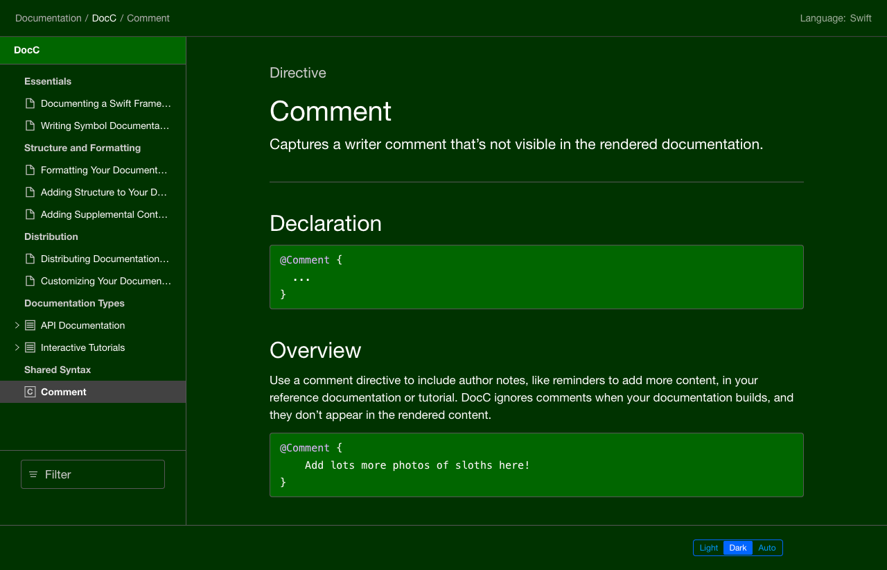
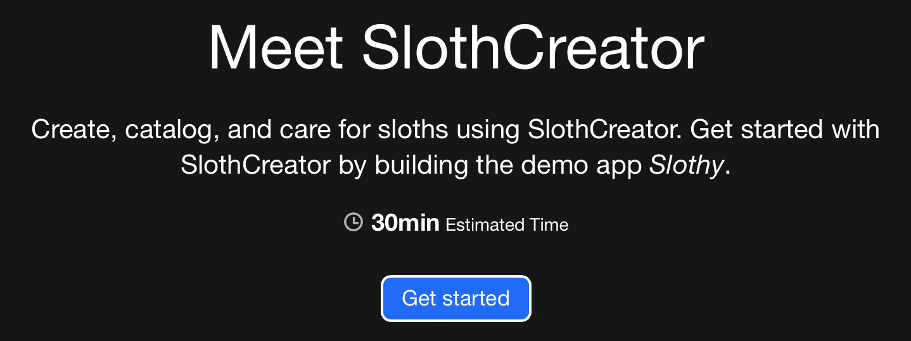

Article
Customizing the Appearance of Your Documentation Pages
Customize the look and feel of your documentation webpages.
Overview
By default, rendered documentation webpages produced by DocC come with a default visual styling. If you wish, you may make adjustments to this styling by adding an optional theme-settings.json file to the root of your documentation catalog with some configuration. This file is used to customize various things like colors and fonts. You can even make changes to the way that specific elements appear, like buttons, code listings, and asides. Additionally, some metadata for the website can be configured in this file, and it can also be used to opt in or opt out of certain default rendering behavior.
If you’re curious about the full capabilities of the theme-settings.json file, you can check out the latest Open API specification for it here, which documents all valid settings that could be present.
Let’s walk through some basic examples of customizing the appearance of documentation now.
Colors
DocC utilizes CSS custom properties (CSS variables) to define the various colors that are used throughout the HTML elements of rendered documentation. Any key/value in the theme.color object of theme-settings.json will either update an existing color property used in the renderer or add a new one that could be referenced by existing ones.
Example
As a simple example, the following configuration would update the background fill color for the “documentation intro” element to "rebeccapurple" by changing the value of the CSS property to --color-documentation-intro-fill: "rebeccapurple".
{
"theme": {
"color": {
"documentation-intro-fill": "rebeccapurple"
}
}
}
Example
Note that any valid CSS color value could be used. Here is a more advanced example which demonstrates how specialized dark and light versions of the main background fill and nav colors could be defined as varying lightness percentages of a green hue.
{
"theme": {
"color": {
"hue-green": "120",
"fill": {
"dark": "hsl(var(--color-hue-green), 100%, 10%)",
"light": "hsl(var(--color-hue-green), 100%, 90%)"
},
"fill-secondary": {
"dark": "hsl(var(--color-hue-green), 100%, 20%)",
"light": "hsl(var(--color-hue-green), 100%, 80%)"
},
"nav-solid-background": "var(--color-fill)"
}
}
}


As a general rule, the default color properties provided by DocC assumes a naming convention where “fill” colors are used for backgrounds and “figure” colors are used for foreground colors, like text. Note that colors defined in theme-settings.json will be used across all pages of your documentation.
Fonts
By default, there are two main fonts used by DocC: one for monospaced text in code voice and another for all other text content. With theme-settings.json, you can customize the CSS font-family lists for these however you choose.
Example
{
"theme": {
"typography": {
"html-font": "\"Comic Sans MS\", \"Comic Sans\", cursive",
"html-font-mono": "\"Courier New\", Courier, monospace"
}
}
}
Borders
Another aspect of the renderer that you may wish to modify is the way that it applies border to certain elements. With theme-settings.json, you can change the default border radius for all elements and also individually update the border styles for asides, buttons, code listings, and tutorial steps.
Example
{
"theme": {
"aside": {
"border-radius": "6px",
"border-style": "double",
"border-width": "3px"
},
"border-radius": "0",
"button": {
"border-radius": "8px",
"border-style": "solid",
"border-width": "2px"
},
"code": {
"border-radius": "2px",
"border-style": "dashed",
"border-width": "2px"
},
"tutorial-step": {
"border-radius": "12px"
}
}
}

Icons
It is also possible to use theme-settings.json to specify custom icons to use in place of the default ones provided by DocC. There are a few basic steps to follow in order to override an icon:
Find the identifier that maps to the icon you want to override.
Add this value as an
idattribute to the new SVG icon.Associate a relative or absolute URL to the new SVG icon with the identifier in
theme-settings.json.
You can also specify a custom favicon for your documentation website by adding an optional favicon.ico file to the root of your documentation catalog.
Example
As a simple example, here is how you could update the icon used for articles in the sidebar to be a simple box:
Find the identifier for article icons:
"article"Add the
id="article"attribute to the new SVG icon:simple-box.svg<svg viewBox="0 0 14 14" xmlns="http://www.w3.org/2000/svg" id="article"> <rect x="2" y="2" width="10" height="10" stroke="currentColor" fill="none"></rect> </svg>Configure
theme-settings.jsonto map the URL for the new article icon{ "theme": { "icons": { "article": "/images/simple-box.svg" } } }
Metadata
You can specify some text that will be used in the HTML <title> element for all webpages in theme-settings.json in place of the default “Documentation” text.
Example
{
"meta": {
"title": "Custom Title",
}
}
With that configuration, the title of this page would change from “Customizing Your Documentation Appearance | Documentation” to “Customizing Your Documentation Appearance | Custom Title”.
Feature Flags
From time to time, there may be instances of various experimental UI features that can be enabled or disabled using theme-settings.json.
Example
If you want to disable the OnThisPageNav right side navigation, you can set the features.docs.onThisPageNavigator.disable to true.
Note that some of these flags may be dropped in the future and new ones may be added as necessary for other features.
{
"features": {
"docs": {
"quickNavigation": {
"enable": true
},
"onThisPageNavigator": {
"disable": true
}
}
}
}
Customizing the appearance of specific pages
Aside from the customizations available via theme-settings.json, Swift DocC provides several Metadata directives that allow you to customize just one specific Article page.
Most notably:
See Also
Structure and Formatting
Formatting Your Documentation Content
Enhance your content’s presentation with special formatting and styling for text and lists.
Adding Tables of Data
Arrange information into rows and columns.
Other Formatting Options
Improve the presentation and structure of your content by incorporating special page elements.
Adding Images to Your Content
Elevate your content’s visual appeal by adding images.
Adding Structure to Your Documentation Pages
Make symbols easier to find by arranging them into groups and collections.